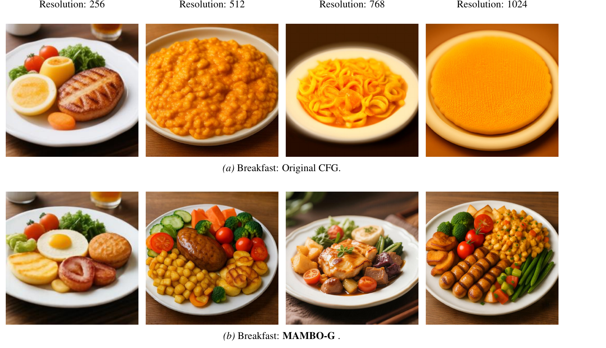
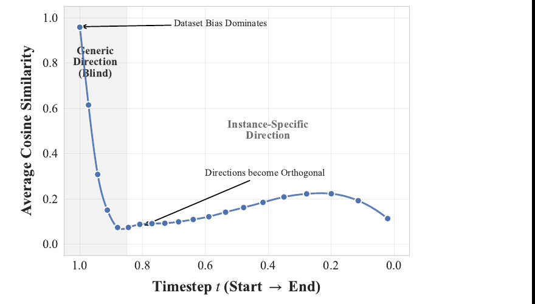
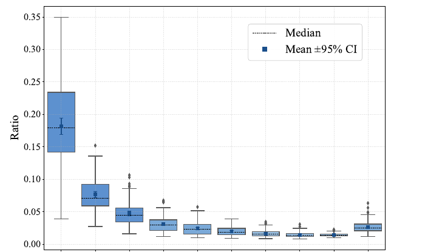
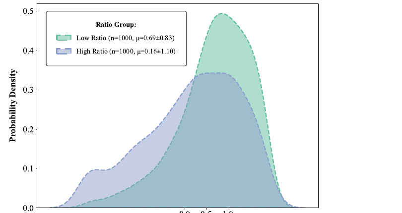
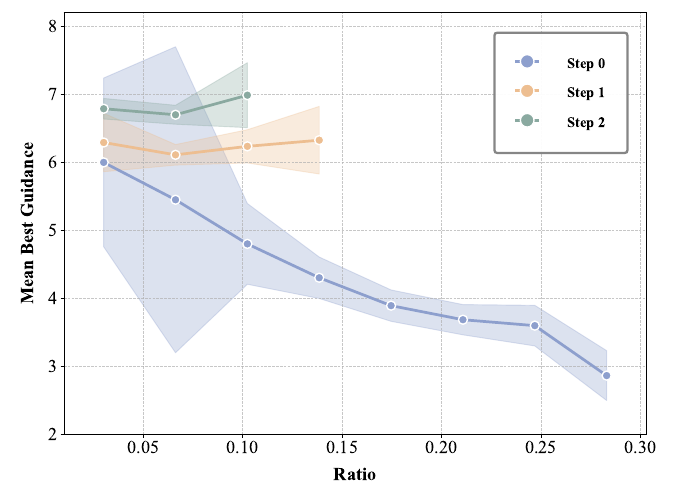

MAMBO-G: Magnitude-Aware Mitigation for Boosted Guidance

术语速查(读正文前先扫一眼)
| 术语 | 一句话解释 |
|---|---|
| CFG (Classifier-Free Guidance) | 用"条件预测 − 无条件预测"的差当作"朝 prompt 推"的方向,乘一个 guidance scale \(w\) 加回去。 |
| guidance update \(\Delta v\) | 即 \(v(x_t,t,c)-v(x_t,t,\varnothing)\),CFG 真正"推"的那个向量。 |
| NFE (Number of Function Evaluations) | 调用一次网络算一次 NFE;CFG 每步要算条件+无条件两次,所以 10 步 = 20 NFE。这是采样成本的硬通货。 |
| zero-SNR | 采样起点是纯噪声(信噪比为零),此时图里没有任何信号,模型只能"盲猜"。 |
| rectified flow / flow matching | 一类把"噪声→数据"建成直线速度场 \(v\) 的生成模型(SD3.5、Lumina、Wan 都是),区别于经典 DDPM 的 \(\epsilon\)-预测。 |
| CV (Coefficient of Variation) | 变异系数 = 标准差/均值,衡量"相对波动"。MAMBO-G 的 \(r_t\) 就是它的类比。 |
| DiT | Diffusion Transformer,现代大规模生图/视频骨干。 |
| ImageReward / CLIPScore / vBench | 三个自动评测:人类偏好打分 / 图文对齐 / 视频质量基准。 |
1. 出发点 (Motivation)
一句话:CFG 不是哪里都该一样强,尤其是采样的第一步,它强得过头了。
CFG 是文生图/文生视频几乎人人都用的技巧——把条件预测和无条件预测的差 \(\Delta v\) 当成"朝着 prompt 的方向",乘个放大系数 \(w\) 加回去。但实践里大家都知道:\(w\) 调大,图文对齐变好,可一旦太大就过饱和、结构错乱[§1]。这篇论文把这个老问题钉死在一个具体时刻上:生成的最开始那几步。
为什么是开始?作者的论证链很干净(§3.1):
- 采样从纯噪声 \(x_1\sim\mathcal N(0,I)\) 出发。此刻 \(x_1\) 和目标图 \(x_0\) 在统计上独立——噪声里没有任何关于"这张图长什么样"的线索。
- 于是模型在 \(t=1\) 的条件预测只能退化成"对这个 prompt 的平均答案" \(\mathbb E[x_0\mid c]\),无条件预测退化成"对所有 prompt 的平均答案" \(\mathbb E[x_0\mid\varnothing]\)。
- 两者之差 \(\Delta v\) 因此是一个只由数据集统计决定、与具体噪声无关的"通用方向"。
作者用一张实测图把这件事坐实了:

直觉:第一步所有样本被往同一个方向猛推。如果这一推的力气(\(w\))开太大,就等于不看路况、对所有人踩同一脚油门——很容易冲出"真实图像"这条路。维度越高越危险:论文指出初始噪声的幅度随维度自然增大(SD2 latent ≈ \(1.6\times10^4\) 维,Flux ≈ \(10^6\),Wan2.1 视频 > \(10^7\)),所以那些为小模型调好的 guidance 策略,搬到大模型/高分辨率/视频上就开始崩(§2.3)。这正是 Fig. 1 里 1024 那坨橙色的来历。
好消息是这是个暂时态:相似度在几步内就掉下去,方向变得因图而异。所以策略呼之欲出——开局先松油门,等图的结构浮现出来再补强。MAMBO-G 要解决的就是:怎么自动、逐样本地决定"现在该松多少"。
2. 方法 (Method)
2.1 先把 CFG 写清楚
rectified flow 的速度场定义为从噪声指向数据的期望方向:
—— 翻译:在中间状态 \(x_t\) 给定的条件下,"数据减噪声"的平均值,就是这一刻该走的方向。
CFG 在采样时把条件速度 \(v(x_t,t,c)\) 换成放大版 \(\tilde v\):
—— 翻译:以无条件方向 \(v(\cdot,\varnothing)\) 为基准,把"条件相对无条件多出来的那部分"\(\Delta v\) 放大 \(w\) 倍再加回去。\(w\) 越大越贴 prompt,也越容易冲过头。
2.2 核心观察:第一步的 \(\Delta v\) 是个常数偏移
把 \(t=1\) 代进去,因为 \(x_1\) 与 \(x_0\) 独立,条件/无条件预测都坍缩成 prompt 层面的期望:
于是第一步的 guidance update 化简为:
—— 翻译:\(x_1\) 被减没了。第一步 CFG 推的方向只是"这个 prompt 的平均图"减"大众平均图",和你抽到哪个噪声毫无关系——这就是 Fig. 2 里余弦相似度 ≈1 的数学解释。
2.3 关键量:幅度比 \(r_t\)
方向虽然通用,但幅度却高度因图而异。作者定义相对幅度比:
—— 翻译:分子是 guidance 这一步想推多远(\(\lVert\Delta v\rVert\)),分母是无条件预测本身有多大。比值就是"这一推相对于模型本身动作幅度的占比"。它在统计上类比变异系数 CV:\(v(\cdot,\varnothing)\) 近似"对 prompt 边际化后的期望轨迹",\(v(\cdot,c)\) 是具体实现,两者之比衡量相对波动。
\(r_t\) 高意味着什么? 意味着这一推相对模型的常规动作"超标"了——条件和图像固有结构冲突严重,是个高风险的离群点(outlier),硬要用大 \(w\) 推就会崩。两条实测证据:


2.4 阻尼函数:为什么是指数衰减
到底该按 \(r_t\) 压多少?作者没有拍脑袋,而是做了一次贪心网格搜索(Algorithm 1):逐步扫描 \(w\in\{1.5,\dots,9.0\}\),记录使 ImageReward 最大的"最优 guidance",再把它和当步观测到的 \(r_t\) 对应起来,得到一条经验参考曲线:

据此把稳定边界拟合成指数衰减:
—— 翻译:\(r_t\to 0\)(动作正常)时 \(\exp(\cdot)\to1\),\(w\to w_{\max}\),放开油门;\(r_t\) 越大,\(\exp\) 越小,\(w\) 越快被拉回到 1(即等于关掉 CFG)。\(w_{\max}\) 是允许的最大 guidance,\(\alpha>0\) 控制衰减快慢。这是一个连续的、幅度感知的滤波器:正常更新尽情放大,离群更新指数级压制。
一个数值例子(取论文默认 \(w_{\max}=10,\alpha=8\)):
- \(r_t=0.18\)(第 0 步典型峰值,见 Fig. 3)→ \(w = 1+9\cdot e^{-1.44}\approx 1+9\cdot0.237 = 3.1\)。开局几乎只用约 3 倍 guidance。
- \(r_t=0.02\)(几步后稳定值)→ \(w = 1+9\cdot e^{-0.16}\approx 1+9\cdot0.852 = 8.7\)。后期放开到接近 \(w_{\max}\)。
同一套公式,自动实现了"开局松、后期紧"的调度——而且是逐样本的,因为每个噪声的 \(r_t\) 不同。
2.5 为什么必须逐实例(而非按时间)
这是 MAMBO-G 和一大票"早期降 guidance"方法的真正分水岭。常见的动态策略是 \(w(t)\)——只看在第几步。但 Fig. 3 的箱线图显示:同一个 \(t\)、不同种子,\(r_t\) 的方差很大。纯时间调度会"一刀切",把本来很稳的样本也罚了、把真正危险的样本又没罚够。\(w(r_t)\) 把判据从"第几步"换成"这一步实际有多危险"。论文用一个对照实验证明了这点(见 §3 Table 3)。
2.6 代码:核心就 4 行
MAMBO-G 已被官方并入 🤗 Diffusers 的 guiders 模块(MagnitudeAwareGuidance)。整个方法的灵魂是下面这个函数——它一字不差地实现了 Eq. (5)、Eq. (6) 和 CFG 的合成:
def mambo_guidance(
pred_cond: torch.Tensor,
pred_uncond: torch.Tensor,
guidance_scale: float,
alpha: float = 8.0,
use_original_formulation: bool = False,
):
dim = list(range(1, len(pred_cond.shape)))
diff = pred_cond - pred_uncond # Δv
ratio = torch.norm(diff, dim=dim, keepdim=True) / torch.norm(pred_uncond, dim=dim, keepdim=True) # Eq.5: r_t
guidance_scale_final = (
guidance_scale * torch.exp(-alpha * ratio)
if use_original_formulation
else 1.0 + (guidance_scale - 1.0) * torch.exp(-alpha * ratio) # Eq.6: w(r_t)
)
pred = pred_cond if use_original_formulation else pred_uncond
pred = pred + guidance_scale_final * diff # Eq.2: v∅ + w·Δv
return pred
注意 dim = list(range(1, ...)) 与 keepdim=True:范数是沿 batch 之外的所有维度算的,所以 ratio 形状是 [B,1,1,...]——每个样本拿到自己的标量缩放。这就是"instance-level"在代码里的样子。
对照标准 CFG guider,差异精确到一行:
shift = pred_cond - pred_uncond
pred = pred_cond if self.use_original_formulation else pred_uncond
pred = pred + self.guidance_scale * shift # 常数 scale,与样本/步数无关
—— 普通 CFG 用常数 guidance_scale;MAMBO-G 把它换成随 \(r_t\) 动态变化的 guidance_scale_final。其余采样、调度器、网络一字不改,所以才能"即插即用"。
3. 实验 (Results)
整体结论:在低步数(激进加速)区间,MAMBO-G 全面优于 CFG 及各类时间调度基线,且跨架构、跨任务、跨分辨率成立。
① 加速比(摘要):SD3.5 上 3×、Lumina 上 4×、14B 视频模型 Wan2.1 上 2×,质量持平或更好[§摘要/§1]。Fig. 1 的口号是"10 步 MAMBO-G ≈ 30 步 CFG"。
② FID 硬指标(Table 4,MS-COCO 5000 prompts,以 50 步 CFG 为参考):
| 方法 | 采样步 | FID (↓) |
|---|---|---|
| CFG (baseline) | 10 | 63.62 |
| MAMBO-G (ours) | 10 | 32.05 |
| CFG (baseline) | 30 | 24.80 |
—— 10 步把 FID 从 63.62 砍到 32.05(几乎减半),逼近 30 步 CFG 的 24.80。说明加速没有以分布偏移为代价[§B.1]。
③ 维度越高、收益越大(Table 1,Qwen-Image,ImageReward):
| 分辨率 | CFG | MAMBO-G |
|---|---|---|
| 256² | 0.53 | 0.83 |
| 512² | 0.63 | 1.10 |
| 768² | 0.30 | 1.07 |
| 1024² | 0.20 | 1.02 |
—— 低分辨率下 CFG 还撑得住、增益有限;到 1024² 时 CFG 塌到 0.20(对应 Fig. 1 的橙色崩坏),MAMBO-G 仍稳在 1.02。这正面验证了"高维更危险"的核心论点[§4.3]。
④ 逐实例 vs 纯时间(Table 3,Qwen-Image,10 步)——本文最关键的消融:
| 方法 | ImageReward |
|---|---|
| 常数 CFG | 0.12 |
| 时间调度(用 MAMBO-G 各步平均 \(w\) 复刻) | 0.83 |
| MAMBO-G(逐实例) | 1.08 |
—— 即便把 MAMBO-G 在每步的平均缩放抽出来做成纯时间调度,也只到 0.83;逐实例进一步把它推到 1.08。0.83→1.08 这一截,就是"instance-awareness"的净贡献——证明 §2.5 不是空谈[§4.5]。
⑤ 正交性(Table 2):MAMBO-G 只动 scale,不动方向,所以能和"改方向"的方法叠加。Rescale 单用 0.73,叠 MAMBO-G 到 1.12;APG 单用 0.85,叠 MAMBO-G 到 0.96[§4.4]。
⑥ 视频(Fig. 8,vBench):Wan 系列上同步数下成像/美学质量都更高,论文称"带 MAMBO-G 的 1.3B 在某些指标上反超 14B 的 CFG 基线"。
4. 实现细节 (Implementation)
外层 forward 把上面的核心函数、区间门控、以及正交的 rescale 串成一条流水线,可以看清各个开关怎么咬合:
def forward(self, pred_cond, pred_uncond=None) -> GuiderOutput:
pred = None
if not self._is_mambo_g_enabled(): # 区间外 / scale≈关闭值 → 直接返回条件预测
pred = pred_cond
else:
pred = mambo_guidance( # 核心:逐实例阻尼的 CFG
pred_cond, pred_uncond,
self.guidance_scale, self.alpha,
self.use_original_formulation,
)
if self.guidance_rescale > 0.0: # 正交开关:过曝修正 (Lin et al. 2024)
pred = rescale_noise_cfg(pred, pred_cond, self.guidance_rescale)
return GuiderOutput(pred=pred, pred_cond=pred_cond, pred_uncond=pred_uncond)
把论文主张和 Diffusers 实现逐条对齐,未发现明显的纸面-代码不一致;倒是有几处工程细节值得记下:
-
分母用的是
pred_uncond,不是pred_cond(magnitude_aware_guidance.py:L150)。论文 Eq. (5) 分母写的是 \(\lVert v(x_t,t,\varnothing)\rVert\),代码忠实对齐。直觉上这把"无条件动作幅度"当作归一化基准,使 \(r_t\) 成为无量纲的相对量,跨分辨率/模型可比。 -
逐样本标量缩放靠
keepdim=True(L150)。torch.norm(..., dim=[1,2,...], keepdim=True)让ratio维持[B,1,1,1],广播乘回diff时每个样本一个独立的 \(w\)。这是"instance-level"在张量层面的全部实现——没有任何额外网络或前向。 -
零额外 NFE。
num_conditions仍是 2(条件+无条件),和普通 CFG 一样(L114-L118);MAMBO-G 只在已经算出的两个预测之间做标量运算,不增加任何网络调用——所以"加速"是真加速(更少步数 × 同样每步成本)。 -
start/stop区间门控(L122-L130)。_is_mambo_g_enabled用skip_start_step <= self._step < skip_stop_step决定是否启用,可只在某段步区间生效;并且当guidance_scale接近"等效关闭值"(原始式 0.0 / 默认式 1.0)时自动跳过——与 CFG guider 的门控逻辑完全一致,便于复用流水线。 -
两种公式约定(
L151-L157)。use_original_formulation=False(Diffusers 默认)走 \(w=1+(w_{\max}-1)e^{-\alpha r_t}\)、基准是pred_uncond;True走论文原式 \(w=w_{\max}e^{-\alpha r_t}\)、基准是pred_cond。两者在数学上等价于不同的 \(w\) 定义偏移,默认式与 Diffusers 历史上 CFG 的写法对齐。 -
默认超参直接写死为论文推荐值(
L59-L60):guidance_scale=10.0(\(=w_{\max}\))、alpha=8.0,与论文 §A.3 的 \(\alpha=8,w_{\max}=10\) 完全一致。论文 Table 5/6 显示在 \(w_{\max}\in[6,16]\)、\(\alpha\in[6,16]\) 的宽区间内分数都稳定,印证"几乎免调参"。 -
Rescale 是另一个正交开关(
L99-L106):guidance_rescale>0时额外调用rescale_noise_cfg(Lin et al. 2024 的过曝修正),与 MAMBO-G 串联——对应 §4.4 的 "Rescale + MAMBO-G" 叠加实验。
小结:论文的"简单、零开销、即插即用"不是宣传话术——核心逻辑确实只有约 15 行,且复用了 Diffusers 现成的 guider 基类与门控。
5. 批判与延伸 (Critique & Connections)
5.1 这篇站得住的地方
- 机制论证闭环:从"\(t=1\) 方向通用"(Eq. 3-4 + Fig. 2)→"\(r_t\) 高即离群"(Fig. 5)→"最优 \(w\) 随 \(r_t\) 指数衰减"(Fig. 6)→拟合出 Eq. 6,每一步都有图有据,不是事后凑公式。
- 关键消融到位:Table 3 的"时间调度 vs 逐实例"直击方法的核心卖点,而不是只跟裸 baseline 比。
5.2 我的保留意见
- \(\alpha\) 的"标定"含糊。Eq. 6 说 \(\alpha\) 由 Fig. 6 的参考曲线"标定",但论文同时把 \(\alpha=8\) 当全局默认。那条曲线是在 SD3.5、10 步、特定 prompt 集上拟合的——换模型/步数/分辨率时,\(r_t\) 的尺度会变,\(\alpha\) 理应随之变。论文用"宽区间不敏感"(Table 5/6)绕过了重新标定,但这等于承认 \(\alpha\) 并非真的"拟合"出来,而是一个够用的经验常数。
- 理论部分只覆盖第一步。Eq. 3-4 的漂亮推导严格只在 \(t=1\) 成立(那里 \(x_1\perp x_0\))。\(t\lt1\) 时 \(r_t\) 为何仍是好探针,论文给的是经验证据(Fig. 4/5)而非理论。换言之,\(r_t\) 在中后期的有效性是观测到的、不是证明的。
- 评测偏自动指标。ImageReward/CLIPScore/vBench/FID 都是 proxy。论文强调"非 cherry-pick、标了种子"值得肯定,但缺人类偏好实验;而 CFG 过曝恰恰是人眼最敏感、自动指标未必充分捕捉的失效模式。
- "通用方向有害"是个强假设。论文把第一步的低多样性(\(\Delta v\) 几乎相同)默认为坏事而去抑制。但对某些追求构图多样性的场景,开局的随机性本身可能有价值——压制它是否在牺牲多样性换稳定,论文没测多样性指标。
5.3 交叉验证:和相邻"早期降 guidance"方法对照
MAMBO-G 不是孤例——"采样早期该减弱 guidance"近两年是个被反复独立发现的结论。把几个代表作摆在一起看分歧更清楚:
| 工作 | 判据(按什么降 guidance) | 减的是什么 | 与 MAMBO-G 的结论关系 |
|---|---|---|---|
| Limited Interval (Kynkäänniemi 2024) | 时间:只在中段 [10%,90%] 步开 CFG,首尾关 | 整段开/关 | 同向:都认定早期 CFG 有害。但它是硬门控、全样本一刀切 |
| Guidance Rescale (Lin et al. 2024) | 不按时间,按更新后的范数 | 缩放 guidance 后的预测以防过曝 | 互补:它改幅度但针对过曝、作用在合成之后;论文实测可叠加(Table 2) |
| APG (Sadat et al. 2024) | 投影分解 \(\Delta v\) | 改方向(去掉平行分量) | 正交:它动方向、MAMBO-G 动标量,叠加有增益(Table 2) |
| CFG-Zero* (Fan et al. 2025) | flow matching 早期的速度误差 | 校正/置零早期 guidance | 同向但更激进:直接把最初几步 guidance 归零;MAMBO-G 是连续阻尼而非硬置零 |
| MAMBO-G(本文) | 逐实例幅度比 \(r_t\) | 连续缩放标量 \(w\) | —— |
分歧的可能成因:前几者都把"危险"绑定在时间或方向上(第几步 / 哪个分量),隐含假设"同一步的所有样本一样危险"。MAMBO-G 的 Fig. 3 直接反驳了这个假设——同一步 \(r_t\) 方差很大——并用 Table 3(0.83→1.08)量化了"按时间"与"按实例"的差距。所以它和这些方法不矛盾、而是更细粒度:Limited Interval / CFG-Zero* 相当于把 \(r_t\) 阈值化成"开/关",MAMBO-G 把它做成了连续、逐样本的旋钮。这也解释了为什么它能和改方向的 APG/Rescale 正交叠加——它们各自占住了"方向"和"幅度"两个独立维度。
相关页面:本文用 qwen-image-2-2026 作为主要测试模型之一,其高分辨率失稳现象(Fig. 1)正是 MAMBO-G 的典型用武之地。
5.4 研究启发 (可迁移的套路)
- 用一个无量纲比值当"危险探针",而不是用时间。\(r_t=\lVert\Delta v\rVert/\lVert v_\varnothing\rVert\) 的精髓是:把"更新量"除以"模型自身动作量",得到一个跨尺度可比的相对量。任何"某个修正项可能过强"的场景(RL 里的 advantage 缩放、LR warmup、梯度裁剪阈值),都可以考虑用这种"相对幅度"而非绝对量或步数来做自适应门控。
- 反直觉点:第一步的"高度一致"是坏消息。通常我们觉得预测一致 = 模型有把握。这里恰相反——一致是因为模型"什么都还没看到、只能盲猜平均答案",此时最不该用力推。一致性低 ≠ 不确定性低,要看一致是来自信息还是来自信息缺失。
- 先用网格搜索量出"最优响应曲线",再拿简单函数拟合它。MAMBO-G 没有直接猜 \(w(r_t)\) 的形状,而是 Algorithm 1 贪心搜出经验曲线(Fig. 6),看出"指数衰减"再拟合。这种"先测后拟"的套路比直接假设函数形式更稳,且拟合出的形状本身就是论据。
- "只改标量、不改张量结构"是即插即用的护城河。MAMBO-G 能并入 Diffusers、能和 APG/Rescale 叠加,根本原因是它把改动压缩成"对 guidance scale 的逐样本缩放"。做加速/正则方法时,把改动限制在最低维度(标量 > 向量方向 > 网络结构),兼容性和被采纳率会高得多。
讨论 / Comments
评论托管在本仓库的 GitHub Discussions, 需 GitHub 账号。